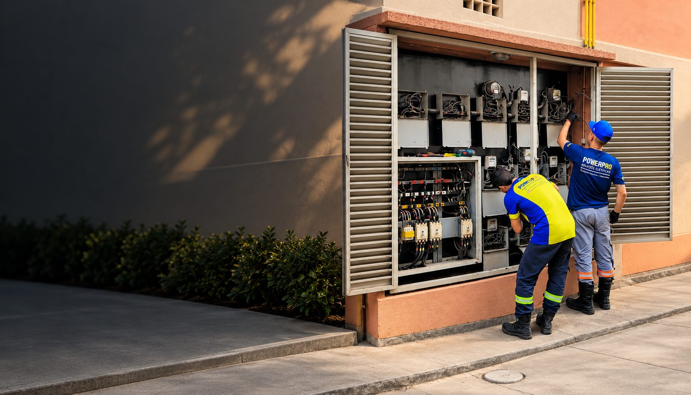

Eletricista Residencial · Novo Hamburgo e Região
Eletricista residencial em Novo Hamburgo e região
Disjuntor desarmando, cheiro de queimado ou fumaça? Diagnóstico técnico no local, explicado em linguagem simples, com atendimento rápido em toda a região metropolitana.
Atendimento de segunda a sexta, das 8h às 18h, mediante agendamento.
Novo Hamburgo, Campo Bom, São Leopoldo, Porto Alegre e região Resposta rápida por WhatsApp Diagnóstico explicado com clareza

Atendimento rápido · Segunda a sexta, 8h às 18h
Eletricista Residencial
Eletricista Urgente
Novo Hamburgo
Campo Bom
São Leopoldo
Porto Alegre
Atendimento Rápido
Diagnóstico no Local